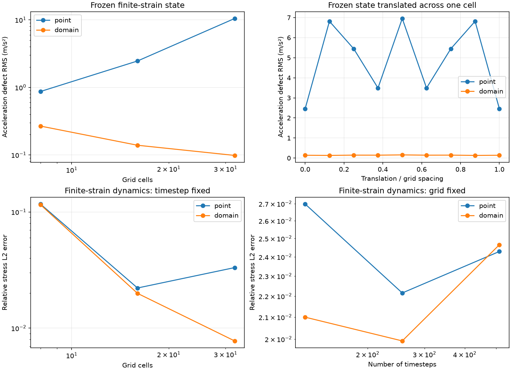

Finite-domain quadrature and cell crossing¶
quadrature='domain' integrates the grid basis over each particle’s represented
area. It reduces the sensitivity of internal forces to distorted integration
points crossing grid cells. quadrature='point' is the default and requires no
particle-domain geometry. Select the integration method independently of linear
or quadratic grid interpolation and FLIP/PIC/APIC transfer.
Use a source checkout for domain quadrature and its benchmarks. The published
1.0.0 package provides point quadrature.
Configuration¶
In the input’s Params constructor, set
self.quadrature = 'domain'
self.interpolation = 'quadratic'
self.transfer = 'apic'
self.S.domain_size = [particle_spacing_x, particle_spacing_y]
self.S.A = particle_spacing_x * particle_spacing_y
For multiple materials, declare domain_size on every material. Widths are in
metres in the reference configuration: (2,) for a uniform rectangle or (n,2)
for per-particle rectangles. Widths must be finite and positive and their product
must equal the represented area A. The solver does not infer aspect ratio or a
material boundary from area alone. Provide domains that represent the intended
material region; overlapping or incomplete initial coverage is not repaired.
Run a small column example with
uv run --locked python MPM.py domain_column
It uses 256 particles, quadratic interpolation, APIC, a supported base and periodic
x boundaries. Figures and data/diagnostics.json are saved under
im/domain_column/elastic/. The column measures hydrostatic drift; it does not
impose exact discrete equilibrium.
Domain integration requires updated mechanics, planar motion and fixed thickness.
Inlets require uniform domain sizes and initialise fresh reference geometry and
F=I. Outlets remove geometry with the rest of each particle row. The stored
domain_halfsize is half the reference width in each direction, shape (n,2).
Integration and conservation¶
Reference rectangles are mapped to current parallelograms by the particle’s
F[:2,:2], about its centre. Their area is J*A; stress and constitutive state
remain constant per particle. The averaged basis is
Nbar_i = (1/Vp) integral_domain N_i(x) dV
gradNbar_i = (1/Vp) integral_domain gradN_i(x) dV
This is a GIMP-style domain-averaged formulation. See Bardenhagen and Kober for domain averaging and cell-crossing behaviour. The F-convected parallelogram geometry is discussed by Sadeghirad, Brannon and Burghardt. Here the underlying basis is integrated directly over that geometry.
Axis-aligned domains use exact piecewise polynomial integration. Sheared and rotated domains are clipped at every basis knot, triangulated, and integrated with a degree-four triangle rule. For the implemented tensor-product linear and quadratic bases, these rules integrate weights and gradients exactly up to floating-point error. A single unsplit Gauss rule is insufficient when a domain crosses a knot.
The same averaged weights and gradients drive mass/momentum deposition, strain, internal force, diagnostics, composition and segregation. This preserves the discrete force/strain power pairing. Partition and affine completeness preserve linear momentum and in-plane torque. Matched APIC uses the averaged stencil’s actual moment matrix; its angular and represented kinetic-energy accounting is unchanged. Weights and gradients are frozen together during each explicit strain-before-force timestep.
Support expands with the domain and can exceed four/nine nodes. Periodic support
keeps unwrapped offsets for affine transfer. Physical boundaries use the grid
basis’s linear extrapolation. Configurations producing negative integrated
weights fail explicitly; weights are not renormalised to hide an incompatible
wall/domain geometry. Very wide domains are bounded by domain_max_support
(default 256 stored stencil entries) and a 128-node-per-axis integration limit.
These limits raise an error rather than truncating the stencil.
Diagnostics record quadrature, interpolation, transfer, mechanics, and
maximum_stencil_entries, so saved results identify the selected configuration.
Verification results¶
Reproduce the controlled comparison with
uv run --locked python -m benchmarks.quadrature_verification --output /tmp/poly-mpm-quadrature.json --figure /tmp/poly-mpm-quadrature.png
The committed benchmarks/quadrature_verification.json records environment,
source hashes, every tested level, conservation diagnostics, and per-case elapsed
time. The finite-strain manufactured solution and error metrics are defined in
verification. Both methods use two particles per axis per
reference cell, the same quadratic/APIC configuration and 256 timesteps.
Grid cells |
Point relative stress error |
Domain relative stress error |
|---|---|---|
8 |
11.70% |
11.55% |
16 |
2.22% |
1.99% |
32 |
3.32% |
0.78% |
At 16 cells, translating the frozen distorted cloud across one full grid cell gives acceleration RMS defects of roughly 2.46–6.96 m/s² with point sampling and 0.131–0.158 m/s² with domain integration. This isolates force quadrature from timestep and remapping errors. All sampled phases are retained in the report.
The 16-cell hydrostatic column’s velocity RMS at 0.05 s decreases from about
6.73e-5 to 4.38e-5 m/s. The remaining imbalance is measurable. Exact basis
integration does not imply exact integration of a spatially varying stress field
represented by one constant value per particle.

Scope and remaining work¶
Independent affine particle domains can leave gaps or overlap during nonuniform deformation. The report measures this geometry error. Shared-corner/topology tracking or another quadrature correction needs separate verification.
Grid refinement improves the tested dynamic finite-strain sequence. It is not a general convergence guarantee for arbitrary distorted clouds, free surfaces, or material interfaces. The frozen-state error still has geometry and piecewise-constant-stress contributions.
Smaller timesteps still increase remapping frequency. The fixed-grid time study remains non-monotone; domain averaging does not replace a consistent, higher-order position/deformation integrator.
Axis-aligned integration is vectorised. Rotated/sheared integration clips and triangulates each particle domain and can be much slower. Per-case timings include diagnostics and are not universal throughput measurements.
Wall treatment must keep the integrated stencil admissible. Curved boundaries, exact general hydrostatic balance, gap-free domain tracking and multi-body contact remain on the implementation checklist.